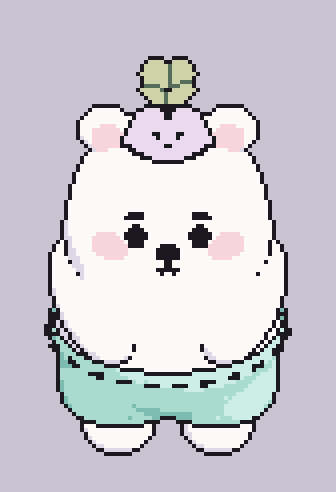
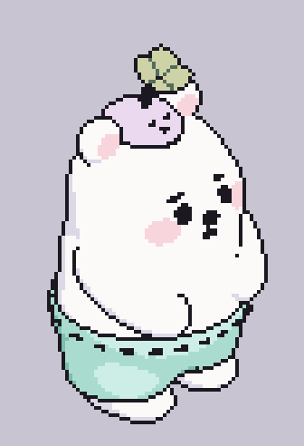
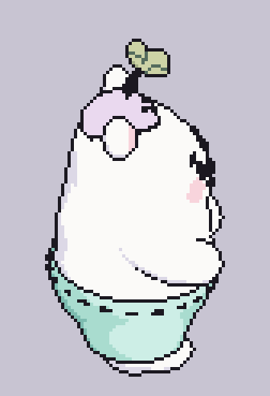
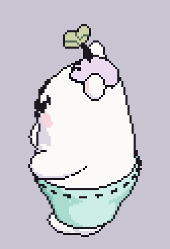
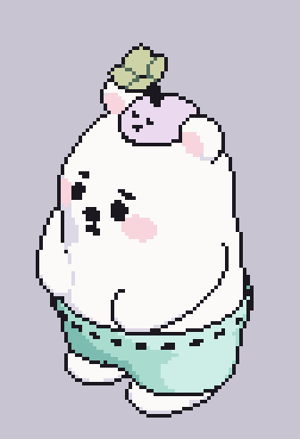
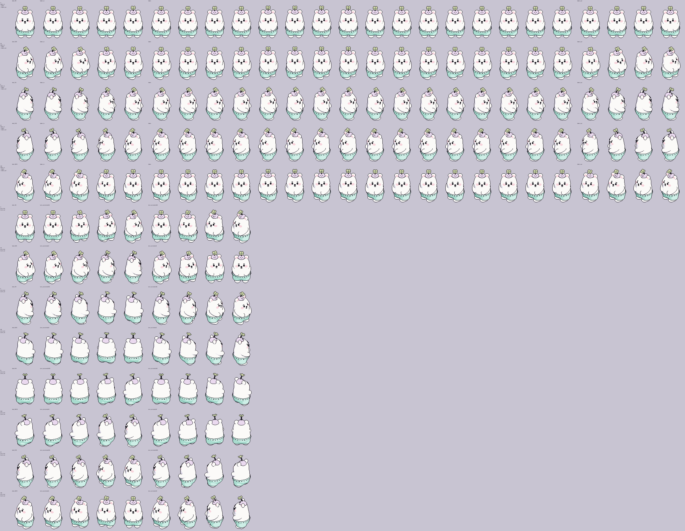

Listen: the whole round head turns toward you (45 deg) and holds, breathing, until you send or dismiss the prompt, then turns back. Each GIF: idle, listen_in, listen twice, listen_out. Turns: 45 deg steps; the spins chain all 8 from S.





